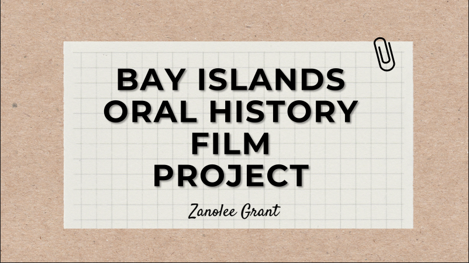

About Bay Islands Archives
Bay Islands Archives is a digital repository built to preserve and celebrate the voices, stories, and histories of the Bay Islands. This project was created to honor the deep cultural heritage of the islands by collecting and sharing images, videos, documents, and oral histories.
Our goal is to capture the visual legacy of our communities and make it accessible to both those still living in the Bay Islands and those who have moved away. Whether you're researching family history, exploring your roots, or simply seeking a deeper connection to home — this space is for you.
This archive is maintained with love and respect for the people of the Bay Islands. We believe that every story matters, and we invite you to explore, remember, and share.
Zanolee Grant, Founder
Zanolee Grant is an independent filmmaker and researcher originally from Roatan, Honduras. She holds an M.A. in Latin American and Caribbean Studies and an MFA in Documentary Filmmaking. Her work centers around advancing community development and preserving the history of the Bay Islands.
Projects by Zanolee Grant
Bay Islands Marriage Records
Bay Islands Oral History Film Project
Dr. Idalia Wilmoth, Collaborator
Idalia T. Wilmoth was born in Chicago and raised in Indiana. She is a proud Afro-Latin Caribbean educator, Black scholar, and three-time alumna of IUPUI. Her family, the Wilmoth's, are originally from Coxen Hole, Roatan. Dr. Wilmoth's work critically examines culture, race, history, and the epistemologies of sites of memory. Her scholarly interests encompass Afro-Latin Studies, Caribbean Studies, Black geography, and Fashion Aesthetics.